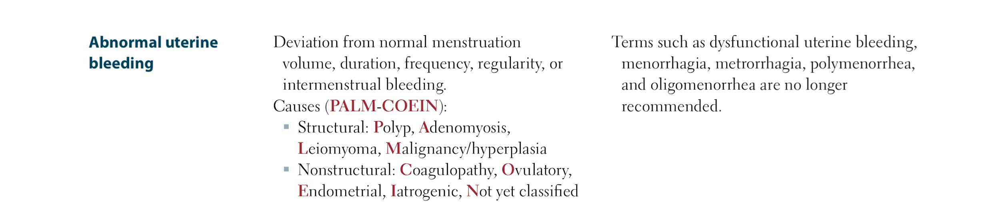
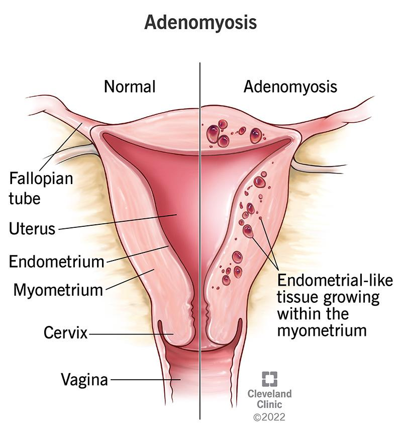
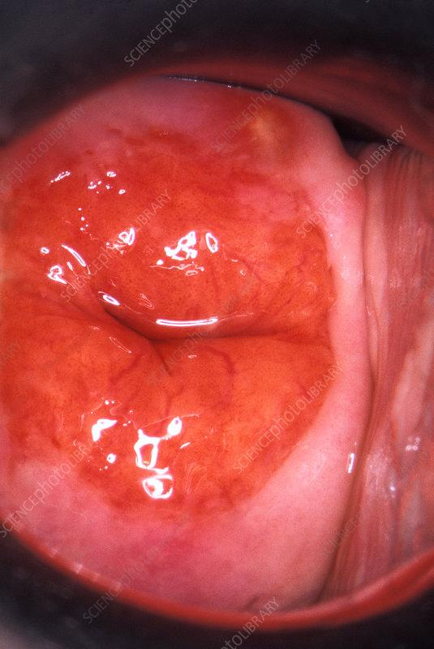

MENORRHAGIA
Your next patient is a 42 year old lady who presents to you complaining of excessive vaginal bleeding. She is using a Mirena for contraception.
Task:
Take history for 5 minutes
Physical examination will appear on the screen at 5 minutes
Explain your diagnosis and differentials
(Note first 3 month after putting mirena we expect heavy bleeding)
DEFINITION OF HEAVY MENSTRUAL BLEEDING
- Menorrhagia = excessive menstrual bleeding that interferes with:
- Physical function
- Emotional function
- Social function
- Occupational function
- Quality of life
- Physical function
- Does not include:
- Intermenstrual bleeding
- Postcoital bleeding
- Intermenstrual bleeding
- Heavy menstrual bleeding = cyclical bleeding.
- Intermenstrual/postcoital bleeding → separate differentials and investigations.
- Always consider pregnancy-related bleeding as a differential.
SPECIFIC FEATURES OF HEAVY BLEEDING
Considered heavy if:
- Passing clots (especially large clots)
- Fully soaking a pad every hour
- Getting up at night to change tampon
- Using a towel due to soaking the bed
- Bleeding through clothing
- Bleeding > 8 days
Amount ↑ and/or duration ↑ both fall under menorrhagia.

+add thyroid
DIFFERENTIALS – TWO GROUPS
1. UTERINE PATHOLOGY
- Adenomyosis
- Fibroids (most common uterine pathology)
- Malignancies (endometrial and cervical) (red flag, rule out irrespective of age)
- Endometrial polyps
- Endometrial hyperplasia
- Endometriosis
2. FUNCTIONAL CAUSES
- Coagulopathies (e.g., von Willebrand disease)
- Ovulatory dysfunction (e.g., menopause transition, early cycles)
- Thyroid disorders
- PCOS
- Contraceptive devices (Mirena can increase bleeding early; Mirena usually helps long-term)
- Medications:
- Anticoagulations
- Tamoxifen
- Herbal (e.g., ginseng)
- Anticoagulations
Additional differentials mentioned:
- Leukemia
- PID / STIs
Diagnosis of exclusion
- Dysfunctional Uterine Bleeding
ADENOMYOSIS

- Endometrium extends into myometrium.
- Features:
- Heavy menstrual bleeding
- Significant pain
- Heavy menstrual bleeding
- Severe condition; many end up with hysterectomy.
APPROACH TO HEAVY MENSTRUAL BLEEDING
Regardless of case:
- Exclude pregnancy (history or urine test)
- Consider cervical screening
- Cervical cancer → postcoital bleeding, but cervical problems can still cause menorrhagia.
- Cervical cancer → postcoital bleeding, but cervical problems can still cause menorrhagia.
- History amd Examination
- Investigations
check full blood examination and serum ferritin concentration. consider checking coagulation profile and TSH
If suspicion of:
- Fibroids (bulky uterus)
- Endometriosis/adenomyosis (significant secondary dysmenorrhea)
- Endometrial cancer
→ Ultrasound (preferred: transvaginal)
HISTORY
- Full bleeding history
- 5Bs
- Last normal menstrual period
- Contraceptive usage
- Pill history
- Likelihood of pregnancy/miscarriage
- Desire for future fertility (important for management options)
- Volume of bleeding
- Impact on life/function
- Pelvic pain/pressure
- Comorbidities:
- Diabetes
- Obesity
- Thyroid disease
- PCOS
- Diabetes
- Signs of cancer
- Family history:
- Endometrial cancer
- Other cancers
- Bowel cancer
- Endometrial cancer
- Consider anemia
EXAMINATION
- Pelvic examination
- Look for:
- Fibroids (uterus size)
- Features of endometriosis
- Fibroids (uterus size)
Ultrasound (preferred: transvaginal)
- Best time: Day 5–10 of cycle
- Used to measure endometrial thickness
If on treatment with no response → do ultrasound.
Endometrial thickness thresholds:
- Postmenopausal: < 5 mm acceptable
- Premenopausal: < 12 mm acceptable
MANAGEMENT (BRIEF OVERVIEW)
Aim: Reduce impact on quality of life.
First:
- Investigate to rule out pathology.
Management depends on desire for pregnancy.
Best first-line:
- Progesterone IUD / Mirena
- Best control of menorrhagia
- Best control of menorrhagia
Other options:
- Contraceptive pills (less effective than Mirena)
- Tranexamic acid
- NSAIDs (help; tranexamic acid better)
For women wanting pregnancy:
- Tranexamic acid
- NSAIDs
For women not wanting pregnancy:
- Contraceptive pills
- Mirena
Progesterone (oral):
- Not very helpful except for short 10-day course in severe uncontrolled bleeding.
RISK OF ENDOMETRIAL CANCER
Higher risk in whoever exposed to excess estrogen:
- PCOS
- Personal/family history of endometrial or colon cancer
- Use of unopposed estrogen (e.g., HRT, estrogen exposure)
- Obesity
- Thick endometrium on imaging
Your next patient is a 42 year old lady who presents to you complaining of excessive vaginal bleeding. She is using a Mirena for contraception.
Task:
Take history for 5 minutes
Physical examination will appear on the screen at 5 minutes
Explain your diagnosis and differentials
1. CASE CONTEXT (ONLINE EXAM FORMAT)
- Mirena note:
- First 3 months after insertion → irregular, unscheduled bleeds are expected.
- This is a known side effect, you don’t worry about Mirena in first 3 months.
- First 3 months after insertion → irregular, unscheduled bleeds are expected.
- But the main task is to explore differentials of menorrhagia and approach.
4. STRUCTURE FOR HISTORY TAKING IN MENORRHAGIA
4.1 Initial Step – Hemodynamic Stability
- Because it is excessive vaginal bleeding, you do not know:
- If it is current severe bleeding or
- Cyclical heavy bleeding.
- If it is current severe bleeding or
- Suggested opening:
- “I’ll just check your vital signs before I ask you questions and make sure you’re stable. Is that okay with you, Jane?”
- Patient responds positively.
- “I’ll just check your vital signs before I ask you questions and make sure you’re stable. Is that okay with you, Jane?”
- Better to do this than skip it.
4.2 Open-Ended Question + Reassurance Dialogue
- Open-ended question options:
- “How can I help you today?”
- “From the notes I can see you have excessive bleeding. Can you tell me more about that?”
- “How can I help you today?”
- Patient will usually say:
- Severe bleeding
- Not usual for her
- New problem
- She is concerned and upset.
- Severe bleeding
- You must address the concern:
- “I’m so sorry to hear that.”
- “Is it okay if I ask you a few questions to understand the situation better?”
- “I’m so sorry to hear that.”
5. EXPLORING PRESENTING COMPLAINT – “BOXES”
Presenting complaint = excessive bleeding / heavy periods.
BOX 1 – Type (Amount vs Duration)
- Clarify:
- “Do you mean the bleeding amount has increased,
or you bleed longer than usual?”
- “Do you mean the bleeding amount has increased,
- You want to know:
- Duration problem vs
- Amount problem (for the same 2–3 days of normal bleeding).
- Duration problem vs
BOX 2 – Timing
- “Since when?”
- “How long have you had heavy periods?”
BOX 3 – Severity
You must get an idea of how severe the bleeding is:
- “How many days do you bleed?”
- “How many pads do you use every day?”
- If she says 3–4 pads:
- Follow-up:
- “Are those pads fully soaked, or are you just changing them every few hours with only spotting?”
- “Are those pads fully soaked, or are you just changing them every few hours with only spotting?”
- Follow-up:
- If she says 3–4 pads:
- “Are you passing clots?”
- Large clots = evidence of massive bleeding.
- Large clots = evidence of massive bleeding.
- “Have you ever soaked your bed or your clothes?”
- Indicates very extreme menorrhagia.
- Indicates very extreme menorrhagia.
BOX 4 – Effect / Impact on Function
- “How is this affecting your life?”
- Explore:
- Work
- Home
- Any problems due to severe vaginal bleeding.
- Work
- This helps assess impact on function and quality of life.
6. THE 5Ps (ALWAYS IN GYNAE HISTORY)
Used especially in period-related problems: menorrhagia, amenorrhea, dysmenorrhea, etc.
Order:
- Period
- Partner
- Pills
- Pregnancy
- Pap-smear (PAP-SMIC)
6.1 First P – Period History
For this 42-year-old premenopausal lady:
- Last menstrual period (LMP)
- Still consider pregnancy.
- If she says “my last period was 8 weeks ago” → you would definitely do a urine pregnancy test, even if she says she has monthly heavy bleeds.
- Still consider pregnancy.
- Are your periods regular or irregular?
- Any excessive pain during your periods?
- Looking for dysmenorrhea + menorrhagia.
- Looking for dysmenorrhea + menorrhagia.
- Any bleeding or pain between your periods?
- Looking for intermenstrual bleeding.
- You are defining:
- Is it just a cyclical heavy bleed
- Or any between-period bleeding or pain.
- Is it just a cyclical heavy bleed
- Looking for intermenstrual bleeding.
This explores both:
- Period itself, and
- Inter-period timeframe.
6.2 Second P – Partner
- “Are you sexually active?”
- Mirena may be for menorrhagia, not necessarily for contraception.
- Mirena may be for menorrhagia, not necessarily for contraception.
- “Are you planning for pregnancy?”
- Especially if LMP is late or missed.
- Especially if LMP is late or missed.
Partner-related symptoms (two important ones):
- Dyspareunia
- “Do you have any pain during sex?”
- “Do you have any pain during sex?”
- Postcoital bleeding
- “Do you have any bleeding after sex?”
- If yes → think cervical problem.
- “Do you have any bleeding after sex?”
Then relate to STIs / PID:
- Symptoms:
- Vaginal discharge
- Fever
- Vaginal discharge
- STI risk questions:
- “Do you practice safe sex and use condoms?”
- “Are you in a stable relationship?” / “Have you ever had multiple partners?”
- “Have you ever been diagnosed with a sexually transmitted infection?”
- “Do you practice safe sex and use condoms?”
Not going deep into sexual history
6.3 Third P – Pills (Contraception)
- If the stem didn’t tell you:
- “Are you using any contraception?”
- “Are you using any contraception?”
- In this case: we know she is on Mirena.
- Important questions:
- “When did you get the Mirena inserted?”
- Because:
- First three months → unscheduled heavy bleeds are acceptable side effect.
- First three months → unscheduled heavy bleeds are acceptable side effect.
- Because:
- “Do you check the thread yourself?”
- Later in Mirena counselling:
- Put finger inside, check thread monthly.
- Or doctor can check too.
- Put finger inside, check thread monthly.
- Later in Mirena counselling:
- “Have you had any follow-ups with your GP to check on the Mirena?”
- “Have you noticed any other side effects of the Mirena?”
- “When did you get the Mirena inserted?”
Also, side effect question applies to other contraception.
6.4 Fourth P – Pregnancy History
- “How many pregnancies have you had?”
- Ask about breastfeeding.
- Linked to endometrial cancer risk factors:
- Early menarche
- Late menopause
- No breastfeeding
- All relate to longer estrogen exposure.
- Early menarche
- Linked to endometrial cancer risk factors:
- Smoking is also related but will be covered in SADMA.
6.5 Fifth P – Pap-smear
- “Are you up to date with your cervical screening?”
- Check cervical screening status.
7. AFTER 5Ps – TARGETED DIFFERENTIALS
Once 5Ps are done, you start ruling out your key differentials.
7.1 Top Differential – Endometrial Cancer
- Most important – assess risk of endometrial cancer.
- Questions:
- “Have you lost weight?”
- “Have you lost appetite?”
- “Any lumps and bumps that you’ve noticed in your body?”
- Tiredness:
- Could be included here or in anemia box later.
- Could be included here or in anemia box later.
- “Have you lost weight?”
7.2 Fibroids
- Very common, especially premenopausal.
- Symptoms to ask:
- “Do you have any abdominal pain?”
- “Do you feel any pressure sensation in your stomach/abdomen?”
- “Do you have any abdominal pain?”
7.3 PCOS
Questions:
- “Do you have acne?”
- “Do you have any excessive hair growth on your face or body?” (hirsutism)
- “Have you had any recent weight gain?”
If desired, add diabetes / insulin resistance questions:
- “Have you noticed feeling more thirsty?” (polydipsia)
- “Are you passing more urine?” (polyuria)
7.4 Thyroid Problems (Hypothyroidism)
Main focus: hypothyroidism.
Questions:
- “Do you have any weather preference?”
- Specifically: “Are you cold intolerant?”
- “Do you have constipation?”
- “Do you have dry skin?” (optional; time will allow).
7.5 PID / STIs (If Not Already Covered)
If not done in partner section, ask here:
- Fever
- Vaginal discharge
- Abdominal pain (if not already asked for fibroids)
7.6 Coagulation Disorders
Ask for other bleeding episodes:
- “Any history of easy bruising?”
- “Any gum bleeding?”
- “Any nosebleeds?”
And:
- “Any family history of easy bruising or coagulation disorders?”
1–3 questions are enough; no need to go into stools etc.
7.7 Anemia Symptoms Box
Because severe bleeding → risk of anemia.
Ask:
- Tiredness (if not already included)
- Shortness of breath (especially on exertion)
- Racing of heart / palpitations (especially on exercise)
12. SADMA, FAMILY HISTORY, MEDICATIONS (WRAP-UP OF HISTORY)
- SADMA:
- Especially smoking:
- Risk factor for endometrial cancer, cervical cancer, and many others.
- Risk factor for endometrial cancer, cervical cancer, and many others.
- Also ask about alcohol, drugs.
- Especially smoking:
- Family history:
- Any cancer, especially:
- Endometrial cancer
- Cervical cancer
- Bowel cancer (linked higher in those with endometrial cancer).
- Endometrial cancer
- Any cancer, especially:
- Medications:
- Especially blood thinners (e.g. warfarin, anticoagulants).
- A patient with high INR will usually have other bleedings before period bleeding, but you still ask and consider.
- Especially blood thinners (e.g. warfarin, anticoagulants).
13. Family History
HISTORY FINDINGS
A. History Summary (What the Lady Tells You)
- She had a Mirena inserted a few months ago.
- Since then:
- She is bleeding more in amount.
- She is bleeding for a longer duration of days.
- She is bleeding more in amount.
- She does not have any red flags.
B. Physical Examination Given in the Exam
- Bimanual examination: Normal (according to some recalls).
- Photo of cervix is provided.
Questions asked:
- “What problem are you seeing in the cervix?”
Findings:
- Cervical ectropion (ectropion)
- Recalled sometimes as a “red cervix”.
- Important:
- It looks like a red cervix, but
- This is not the red cervix of cervicitis or PID.
- This is clearly ectropion.
- It looks like a red cervix, but
- Recalled sometimes as a “red cervix”.
- Absent IUD threads
- Second problem in the picture: no threads of Mirena are visible.
- Conclusion:
- The Mirena is not in place where it should be.
- The Mirena is not in place where it should be.
- Second problem in the picture: no threads of Mirena are visible.
C. Possible Situations When Threads Are Not Seen
- Mirena might have been:
- Expelled (fallen out without the patient noticing), or
- Translocated, or
- In the worst case, caused uterine rupture
- (though rupture would usually cause pain and “stuff like that”).
- (though rupture would usually cause pain and “stuff like that”).
- Expelled (fallen out without the patient noticing), or
Overall:
- The Mirena is no longer in the intended place.
8. PHYSICAL EXAMINATION FINDING
- Bimanual examination normal
- Cervix: cervical ectropion and no threads of mirena

OTHER CERVICAL IMAGES THAT CAN APPEAR IN EXAM
Things you may see in a speculum exam or photo:
- Normal nulliparous cervix
- Transitional zone appears as a small red ring around the os.
- Transitional zone appears as a small red ring around the os.
- Ectropion
- The transitional zone has rolled out.
- Appears as a circular red area that has “rolled out” → ectropion.
- The transitional zone has rolled out.
- Multiparous cervix
- After multiple NVDs, the cervix looks more like a hole.
- Not open, but deeper-looking.
- After multiple NVDs, the cervix looks more like a hole.
- Atrophic cervix
- Seen in a menopausal lady.
- Transitional zone is not seen clearly.
- Seen in a menopausal lady.
- IUD threads
- If an IUD (e.g. Mirena) is in place, you expect to see the threads outside the cervical os.
- If an IUD (e.g. Mirena) is in place, you expect to see the threads outside the cervical os.
- Polyp
- A piece of tissue protruding from the cervix.
- A piece of tissue protruding from the cervix.
- Post cone biopsy cervix
- After a cone biopsy, the transitional zone is no longer clearly seen because part has been removed.
- After a cone biopsy, the transitional zone is no longer clearly seen because part has been removed.
- PID / cervicitis-style discharge
- In PID, speculum exam shows discharge pouring out of the cervix.
- In PID, speculum exam shows discharge pouring out of the cervix.
- Warts
- Characteristic wart-like lesions.
- Characteristic wart-like lesions.
- Suspicious / cancer lesion
- Ugly, irregular lesion that:
- Doesn’t look like anything else, and
- Has superficial bleeding.
- Doesn’t look like anything else, and
- In such a case:
- First diagnosis = cancer
- Until you biopsy and remove that lesion to see what it is.
- First diagnosis = cancer
- Ugly, irregular lesion that:
DIAGNOSIS & EXPLANATION TO PATIENT
A. Choosing the Top Diagnosis
- Ectropion:
- Does not usually cause menorrhagia, but
- It can cause bleeding, postcoital bleeding, and spotting.
- Does not usually cause menorrhagia, but
- You must decide what to mention first:
- Ectropion
- Or IUD-related problem (missing Mirena / complications).
- Ectropion
Lecturer’s approach:
- Will bring up ectropion first, then:
- Talk about the possibility of IUD complication.
- Talk about the possibility of IUD complication.
- If someone prefers to mention IUD first, then ectropion → understandable.
B. How to Explain the Findings to the Patient
- Cervical ectropion
- “On your examination, I found that you have a condition called cervical ectropion.”
- Simple, lay explanation:
- “This is a change in the mouth of the womb (or cervix).”
- “There are two layers there – an outer layer and an inner layer.”
- “In your case, the inner red layer has rolled outwards.”
- “When that inner layer rolls out, we call this cervical ectropion.”
- “This is a change in the mouth of the womb (or cervix).”
- You do not need to explain:
- Transitional zone
- Endocervix
- Ectocervix
- In detail → avoid to save time.
- Transitional zone
- “On your examination, I found that you have a condition called cervical ectropion.”
- Missing Mirena threads
- “The other issue is that the threads of your Mirena are not visible / are missing / are not there.”
- Explain meaning:
- “This means it might have moved to an unusual place.”
- Or “it might have dropped out.”
- “This means it might have moved to an unusual place.”
- Everyone might jump to:
- Translocation or uterine rupture, but
- Mirena may also have fallen out without the lady noticing.
- Translocation or uterine rupture, but
- “The other issue is that the threads of your Mirena are not visible / are missing / are not there.”
C. Priorities and Differentials in This Case
- Main card to discuss: Ectropion (especially because of the photo).
- Second important aspect: IUD (Mirena) complication due to missing threads.
- Ectropion is not the best pure diagnosis for menorrhagia, but:
- It does give different versions of excessive bleeding.
- It does give different versions of excessive bleeding.
D. Differential Diagnosis List (Re-applied)
- Uterine differentials:
- Endometrial cancer
- Cervical cancer
- Adenomyosis
- Fibroids
- Endometrial polyps
- Endometrial cancer
- Functional differentials:
- Coagulation disorders
- PCOS
- Hypothyroidism
- PID / STIs
- Dysfunctional uterine bleeding (at the end of list)
- Coagulation disorders
CASE 2
Your next patient is a 57 year old lady who presents to you complaining of vaginal bleeding. USD and bloods have been done
Hb 130, USD: ET 11mm
Task:
- Take history
- Physical examination on screen
- Interpret the investigations to the patient
- Explain your diagnosis and differentials
B. Meaning of Endometrial Hyperplasia (Concept Clarification)
- Question: “Endometrial hyperplasia – benign or cancerous?”
- Explanation:
- Hyperplasia = thickened endometrium, thicker than usual.
- That’s why we perform biopsies:
- To look at the cells.
- To look at the cells.
- On biopsy, hyperplasia is divided into:
- Forms with benign features.
- Forms with atypical features.
- Forms with benign features.
- Atypical changes raise concern for:
- Endometrial cancer.
- Endometrial cancer.
- Hyperplasia = thickened endometrium, thicker than usual.
- Key point:
- “Endometrial hyperplasia” by itself does not tell you:
- Benign vs precancerous vs cancerous.
- Benign vs precancerous vs cancerous.
- It tells you only that:
- Thickness has increased.
- “Most of the time, it’s not a good change.”
- Thickness has increased.
- “Endometrial hyperplasia” by itself does not tell you:
- Statistic from up-to-date (as cited in lecture):
- Endometrial thickness > 5 mm in a menopausal lady:
- Sensitivity for cancer is 96%.
- Most will have cancer, but some can be benign.
- Sensitivity for cancer is 96%.
- Endometrial thickness > 5 mm in a menopausal lady:
C. OSCE Task in This Case
- Take a history from this lady.
- You are given physical examination findings on screen.
- You need to:
- Interpret investigations to the patient.
- Explain your diagnosis to the patient.
- Interpret investigations to the patient.
D. History Structure (Menopausal Version – 5Ps Adjusted)
- Start the same way:
- Hemodynamic stability if you like.
- Open-ended question.
- Address concern.
- Explore bleeding with same 4 boxes:
- Description
- Timing
- Severity
- Effect on life
- Description
- Hemodynamic stability if you like.
- Menopausal 5Ps
Period history (P1 – Menopausal Version)- “When was your last period?”
- She is menopausal (e.g. 5 years ago).
- She is menopausal (e.g. 5 years ago).
- Ask about menopausal symptoms:
- As a habit: hot flushes (most common).
- Optional here or in partner:
- Dry vagina:
- “Have you noticed any dryness in your vagina?”
- Linked to atrophic vaginitis (very common exam theme).
- “Have you noticed any dryness in your vagina?”
- Dry vagina:
- As a habit: hot flushes (most common).
- Ask about:
- “Any previous history of irregular bleeds after your last period?”
- Any spotting or irregular bleeding since menopause = abnormal uterine bleeding.
- Any spotting or irregular bleeding since menopause = abnormal uterine bleeding.
- “Any previous history of irregular bleeds after your last period?”
- “When was your last period?”
- Partner history (P2 – Menopausal Still Can Be Sexually Active)
- “Are you sexually active?”
- If yes:
- Dyspareunia:
- “Do you have any pain on sex?”
- “Do you have any pain on sex?”
- Postcoital bleeding:
- “Do you have any bleeding after intercourse?”
- “Do you have any bleeding after intercourse?”
- Dyspareunia:
- Still look for STIs:
- “Are you in a stable relationship?”
- “Multiple partners?”
- “Have you ever had an STI?”
- Symptoms:
- Fever
- Vaginal discharge
- Fever
- “Are you in a stable relationship?”
- “Are you sexually active?”
- Pills (P3 – Focus on HRT)
- Main question in menopausal lady:
- “Have you used HRT (hormone replacement therapy)?”
- “Have you used HRT (hormone replacement therapy)?”
- You know HRT is associated with:
- Increased risk of certain cancers.
- Increased risk of certain cancers.
- If someone wants to ask about past contraception, that’s fine, but main emphasis is HRT.
- Main question in menopausal lady:
- Pregnancy history (P4)
- “How many pregnancies have you had overall?”
- “Did you breastfeed?”
- Links to risk factors for endometrial cancer:
- Exposures to estrogen:
- Early menarche, late menopause, no breastfeeding.
- Early menarche, late menopause, no breastfeeding.
- Exposures to estrogen:
- Links to risk factors for endometrial cancer:
- “How many pregnancies have you had overall?”
- Pap-smear & Mammogram (P5)
- “Are you up to date with your cervical screening?”
- Second thing in this group:
- “Have you done your mammograph?”
- “Have you done your mammograph?”
- In postmenopausal ladies, you ask both:
- Cervical screening
- Mammogram
- Cervical screening
- “Are you up to date with your cervical screening?”
DDX Questions
- Cancer Qs
- Fibroids Qs
- Thyroid Qs
- PCOS Qs
- PID Qs
- Coagulation Qs
- Anemia symptoms Qs
- SADMA Qs
- FHx. Qs
HISTORY FINDINGS
- Menopause for 5 years
- Vaginal bleeding for 5 days since last week
- Soaked a few pads
- Last CST 5 years ago
- Mild discomfort on sexual intercourse
PHYSICAL EXAM FINDINGS
- Mildly pale
- Pelvic examination:
- Features of atrophic vaginitis seen
- Uterus bulky
Significance:
- In a menopausal lady, you expect an atrophic, very small uterus.
- A bulky uterus + thick endometrium is significant and worrying.
F. Explaining Investigations to the Patient
Focus on endometrial thickness:
- “On the ultrasound, we have checked the thickness of the inner layer of your womb.”
- “It should be less than 5 millimeters in someone after menopause.”
- “In your case, it is 11 millimeters, which is higher than the normal range.”
- “We call this endometrial hyperplasia.”
Additional points:
- For premenopausal ladies:
- Scan is usually done day 5–10.
- Acceptable up to around 12 mm.
- More than 12 mm would be considered abnormal in a fertile lady.
- Scan is usually done day 5–10.
- For menopausal ladies:
- Can do scan anytime (no cycles).
- Should be < 5 mm.
- Can do scan anytime (no cycles).
- Also explain hemoglobin:
- “We checked your red blood cells and the particle that carries oxygen, called hemoglobin.”
- “Your hemoglobin is normal (e.g. 130), meaning you do not have anemia.”
- “We checked your red blood cells and the particle that carries oxygen, called hemoglobin.”
G. Diagnosis and How to Phrase It
- Label:
- “You have a condition called endometrial hyperplasia.”
- “You have a condition called endometrial hyperplasia.”
- But:
- Because the uterus is bulky and the endometrium is thick, you must:
- Continue discussion into the high risk of endometrial cancer.
- Continue discussion into the high risk of endometrial cancer.
- Examiner expectation:
- Must include cancer in your list of differentials.
- Not enough to just say “endometrial hyperplasia”.
- Must include cancer in your list of differentials.
- Because the uterus is bulky and the endometrium is thick, you must:
Explain to patient:
- “You have a condition called endometrial hyperplasia.”
- “We need to take a further sample to better understand the type of hyperplasia.”
- “I have some concerns that this can be a malignant change (a cancerous change) in your womb, called endometrial cancer.”
- You emphasise:
- There is a high risk of cancer,
- So you need to find out if it is:
- Benign hyperplasia, or
- A precancerous / cancerous type.
- Benign hyperplasia, or
- There is a high risk of cancer,
H. Differentials and Expectations
- Main diagnosis:
- Endometrial hyperplasia with high risk of endometrial cancer.
- Endometrial hyperplasia with high risk of endometrial cancer.
- You must list other uterine and functional differentials as well, but:
- For this case, infections must be named precisely as:
- Pelvic inflammatory disease or
- Sexually transmitted infections
- Pelvic inflammatory disease or
- Not just “infections”.
- For this case, infections must be named precisely as:
- Core principle:
- A long, good, and specific list of differentials, with cancer clearly included.
- A long, good, and specific list of differentials, with cancer clearly included.
CASE 3
Your next patient is a 30 year old lady who has presented with heavy menstrual bleeds.
Task:
Take a history from the patient
Physical examination on the screen
Explain diagnosis and differentials
Request further investigations
- Apply the same menorrhagia structure:
- Same initial complaint exploration.
- Same 5Ps (premenopausal version).
- Same differentials.
- Same initial complaint exploration.
B. History Findings
- Periods have become heavy
- Amount of bleed and duration longer
- LMP 3 weeks ago
- Has not been sexually active for months
C. Physical Examination
- On pelvic / bimanual examination:
- You feel a 14-week enlarged uterus.
- You feel a 14-week enlarged uterus.
- Lecturer’s thought:
- Might have liked to ask the examiner:
- If the border is regular or irregular, to better understand what she is dealing with.
- If the border is regular or irregular, to better understand what she is dealing with.
- Might have liked to ask the examiner:
D. Main Diagnosis and Top Differentials
Top two:
- Uterine fibroid (myoma)
- Most likely diagnosis.
- Explain simply to patient:
- “It is a non-cancerous growth in the womb.”
- If you want more detail:
- “It is a non-cancerous growth in the muscular layer of your womb.”
- “It is a non-cancerous growth in the muscular layer of your womb.”
- “It is a non-cancerous growth in the womb.”
- Most likely diagnosis.
- Endometrial cancer
- Placed as second differential.
- Even in a 30-year-old, with a large uterus, cancer is above other uterine problems.
- Placed as second differential.
Additional:
- Adenomyosis is still a good differential, but comes after cancer here.
E. Investigations for This Case
Key investigation:
- Transvaginal ultrasound
- This is your top investigation.
- Mentioning “transvaginal” is good because:
- It is more accurate than transabdominal in this context.
- It is more accurate than transabdominal in this context.
- This is your top investigation.
Also:
- Anemia investigations:
- Full blood examination.
- Ferritin:
- Looking at iron levels.
- Looking at iron levels.
- Full blood examination.
Other investigations (coagulation disorders, etc.) can be correct but:
- Top of the list:
- Transvaginal ultrasound
- FBE + ferritin
- Transvaginal ultrasound
OVERALL TAKE-HOME MESSAGE FROM ALL THREE MENORRHAGIA CASES
- You do not need to memorise specific recalls.
- You need to:
- Understand your differentials.
- Build and use a menorrhagia structure:
- Initial hemodynamic check (if needed).
- Open-ended question + reassurance.
- Four boxes for presenting complaint:
- Type (amount vs duration)
- Timing
- Severity (days, pads, clots, soaking bed/clothes)
- Effect on life
- Type (amount vs duration)
- 5Ps:
- With small changes between:
- Premenopausal (case 1, case 3)
- Postmenopausal (case 2)
- Premenopausal (case 1, case 3)
- With small changes between:
- Then targeted differentials (uterine + functional).
- Initial hemodynamic check (if needed).
- Understand your differentials.
- With this structure:
- If you get an old case → easy.
- If you get a new case → you can still “cruise through” and manage it properly.
- If you get an old case → easy.